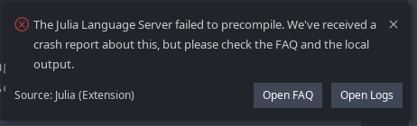

常见问题解答
语言服务器无法预编译。我该怎么办？
你可能遇到了如下图所示的弹窗提示：

点击 Open Logs 按钮，或者进入 Output > Julia Language Server。你会看到类似如下的消息：
The Language Server failed to precompile.
Please make sure you have permissions to write to the LS depot path at
/home/pfitzseb/.config/Code/User/globalStorage/julialang.language-julia/lsdepot/v1当前账户需要对指示的目录具有读/写权限。还要确保该目录不位于 NFS 卷或类似位置，因为这可能会导致问题。
当 Julia 进程崩溃时，集成的 REPL 会关闭。我如何获取更多信息？
当底层进程崩溃时保持集成终端打开，目前依赖于上游 VS Code 的支持。暂时，你可以尝试以下两种方案：
- 在 Linux/MacOS 上，你可以尝试使用 tmux 集成（前提是系统上已经安装了 tmux）。这样可以确保即使 Julia 进程终止，底层进程依然存活，你应能看到实际的错误信息。
- 启动一个新终端（无论是集成的还是外部的），并在该终端手动启动 Julia。然后使用
Julia: Connect external REPL命令并按照指示操作。在 Julia 会话连接到 VS Code 后，像以前一样运行代码；当 Julia 关闭时，终端将保持打开状态。